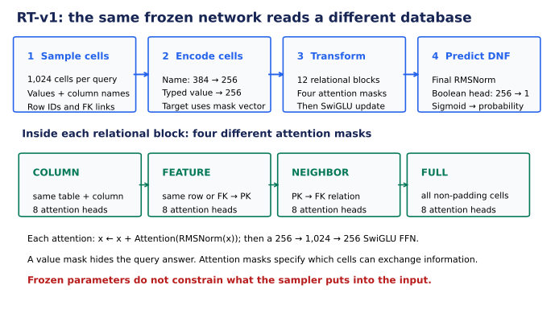
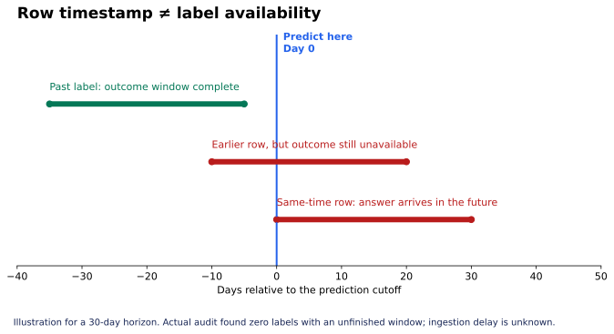
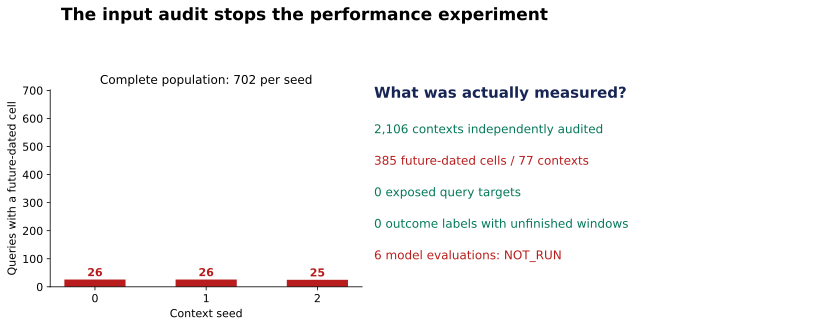

Year5 · Quarter2 · Lesson175
Zero-shot evaluation
One win: decide whether an unseen-database result deserves its claimed “zero-shot” label, then audit the inputs before trusting its score. About 20 minutes; the notebook is a separate practice session.
171: exclude the database → 172: encode cells → 173: pretrain → 174: adapt → 175: evaluate without target updates.
1 · Freeze the weights, then ask what else can change¶
Lesson 174 compared ways to update a model using later F1 labels. Even its “freeze” arm trained the task heads. Its tasks and database were already familiar to the model. It therefore left a different question unanswered: can a pretrained model predict on a database excluded from its training?
We need a model that can read new schemas. L173's database-specific task heads do not provide that interface. Here we inspect the released Relational Transformer, RT-v1, which represents cells using their values, types and column/table names. The checkpoint named pretrain_rel-f1_driver-dnf.pt is released as having excluded F1 from gradient pretraining. That is the authors' provenance claim; replaying its weights cannot independently reconstruct its training history. Primary paper §4.1–4.3, release card.
Gradient pretraining changes the model's parameters to reduce a training loss. Checkpoint selection chooses among saved parameter states. Context labels are answers included in the input at inference. These are three different ways information can influence a prediction.
The RT paper calls database-held-out inference zero-shot even though target-task validation selects the released checkpoint and historical labels may appear in the sampled relational context. Its claim is therefore more specific than “the model has never accessed target labels.” We retain the paper's terminology and state the access paths beside it. Do not substitute today's RT-J quickstart for the original RT-v1 experiment: the architectures and preprocessing differ. RT-v1 branch.
2 · Model architecture: where can an answer enter?¶
Reading route. Trace sample → encode → twelve relational blocks → probability. Attention forms a weighted mixture of permitted cell representations; an attention mask specifies which cells may exchange information. Multiple attention heads learn different mixtures in parallel. The feed-forward network transforms each resulting cell vector, and a residual connection adds an update to the existing vector. In the figure, RMSNorm rescales a vector by its root-mean-square magnitude, while SwiGLU names the gated nonlinear feed-forward update. You can follow the information-access audit without deriving those two internal operators.
Follow the computation
Value masks and attention masks do different jobs
- 1
Sample the query context
1,024 cells contain values, column names, row identities and foreign-key links.
- 2
Encode cells to width 256
The query target uses a mask embedding instead of its answer.
- 3
Apply twelve relational blocks
Column, feature, neighbor and full attention each define different access; residual updates and SwiGLU transform states.
- 4
Read the boolean head
Final RMSNorm and a 256 → 1 head give DNF probability under frozen weights.
Open the decisive operation
If the query answer is masked, can other future-dated cells still leak?
Yes. Hiding the target value does not certify the sampler’s context. That is why this lesson stops before model scoring.
Trace answer: Yes. Hiding the target value does not certify the sampler’s context. That is why this lesson stops before model scoring.
Actual RT-v1 architecture; the input audit failed. This drawing does not imply that the stopped evaluations ran.


A cell token is one field in one row. A typed linear encoder handles its value; a frozen language model supplies a 384-number description of its column and table name. RT projects both into 256-number representations. For the query target, a learned mask vector replaces the value representation. Its original label remains available to the scoring code, but must not enter the predictive representation.
A foreign key (FK) points from a child row to a parent's primary key (PK). Each of twelve blocks applies column, feature, neighbor and full attention, then a feed-forward update. Column attention connects matching columns; feature attention connects the same row and FK→PK parents; neighbor attention uses the reverse relation; full attention connects all non-padding tokens. Residual additions preserve the previous representation. The boolean output head maps the final query representation to one logit, an unconstrained score; sigmoid converts it to a probability. Source forward pass.
We freeze the complete network, including every output head. Input selection still matters: if the sampler includes information unavailable at prediction time, a frozen model can exploit it.
3 · Write an information-access contract¶
Before computing a metric, record four questions:
| Access path | Released pretrain checkpoint | Released fine-tuned comparator |
|---|---|---|
| Target-database gradient updates | Excluded according to release | Included |
| Target-task validation selection | Used | Used |
| Historical labels in context | Permitted by sampler | Permitted by sampler |
| Query answer or unavailable information | Must be excluded for a clean claim | Must be excluded for a clean claim |
Predict how the claim changes when you toggle each access path. The fixed baseline stays visible.
A historical row from the test period is not automatically a leaked answer. Under a declared rolling evaluation, an earlier outcome may have become observable before a later query. A fixed offline test-label embargo would forbid that access. Choose and report the policy; do not mix them. Our audit records both test-period label access and whether each outcome window has finished.
4 · A row timestamp is not when its label becomes available¶
The F1 task asks whether a driver fails to finish a race in the following 30 days. A task row dated day 0 describes the prediction opportunity at day 0; its answer summarizes (day 0, day 30]. That answer cannot be assumed known on day 0. Even an earlier task row dated day −10 has an unfinished outcome window until day 20. Exact task SQL.


For this task, a necessary outcome-availability condition is label_cutoff + 30 days <= query_cutoff. It does not prove immediate ingestion or the availability of every feature. Keep event time (when an event happens), label horizon end (when the target window finishes) and arrival time (when the system receives the information) separate.
The original sampler filters future PK→FK edges, but follows FK→PK edges without the same check. It masks only the query target. These source rules motivate direct checks of every emitted context; a code concern is not itself a measured count. Sampler.
5 · Execute the audit before the performance run¶
Our approved target was two released checkpoints × three context seeds × all 702 official test queries: six full evaluations. We first ran the original native sampler at 1,024 cells, BFS width 256, with seeds 0/1/2. We preserved all 2,106 contexts and independently reconstructed the query labels from all 26,080 raw F1 results rows.
| Check | Complete measured result |
|---|---|
| Contexts / cell slots | 2,106 / 2,156,544 |
| Independently reconstructed query labels | 2,106 |
| Exposed query targets | 0 |
| Same-time visible outcome labels | 0 |
| Visible labels with unfinished outcome windows | 0 |
| Future-dated cells / affected contexts | 385 / 77 |
| Visible historical label cells | 29,988 |
| Historical test-period label cells | 12,351 |
| Cells without a timestamp | 432,050 |
| Checkpoint evaluations | 0 of 6 — NOT_RUN |
Counts include repeated cells across query contexts. They are not counts of unique database rows. Context seeds0/1/2 contain26/26/25affected queries respectively.


All future-dated cells belong to race schedule rows: year, round, name, date and time. One query at 2011-03-27 00:00 UTC includes a race dated 06:00 UTC that day. The sampler reaches it through an unfiltered foreign-key-to-parent step. These attributes may have been known in advance; the snapshot contains no arrival history to prove that. We establish failure of the declared event-time filter, not demonstrated exposure to future race outcomes. The complete audit found no unmasked query target and no label with an unfinished outcome window.
The temporal contract fails before inference. All six checkpoint evaluations remain NOT_RUN; there is no measured AUROC comparison. We do not shrink the task, quietly fix the sampler, or treat a context audit as a model reproduction. The inference operator refuses the failed audit. Its post-gate GPU path is supplied but unvalidated because the gate blocked execution.
There is a second source limitation: the original preprocessing computes database-column statistics over the entire database table. Task validation/test numeric statistics are replaced with training-task statistics, but database columns and the global datetime statistics have a broader fit population. A source-faithful replay would retain that difference; a strict training-only reconstruction would be a separately named experiment. Preprocessor.
Why not quote the paper's aggregate percentage as our result?
The curriculum's older summary mentions an aggregate percentage of supervised AUROC. Such a ratio averages a particular paper's task suite and version; it is not an accuracy percentage, a guaranteed ceiling, or a score for this F1 task. We did not reproduce that suite. The supplied fine-tuned comparator was released later and may not be the checkpoint behind the original table. The lesson therefore reports no numerical performance parity.
6 · Match complete identities before scoring¶
The same driver can appear at many cutoffs. The evaluation key is (driver ID, cutoff). Matching only driver ID can overwrite predictions; matching row positions can silently compare the wrong answers after shuffling.
AUROC measures how often a positive example receives a higher score than a negative one, with half credit for a tie. For positive scores [0.9, 0.7] and negative scores [0.2, 0.7], the four pairwise credits are 1, 1, 1, 0.5, so AUROC is 0.875. This is a synthetic arithmetic example, not a model result.
In the lab, first reject missing or duplicated complete keys. Then align the scores and compute the metric. A permuted prediction file should give the same answer; a missing cutoff should stop scoring. Three context seeds describe sampler variability on one database, not three independent replications across databases.
7 · Lab: defend the stop decision¶
Open the prepared notebook · Download student notebook · Reference solution · Full reproduction contract.
Implement three live functions: classify information access, count unavailable context information, and align complete keys before AUROC. Immediate checks reject plausible wrong policies. Replay the complete saved sampler evidence; reconstruct all labels independently; inspect a future-dated witness. The notebook includes the original RT forward pass and full inference operator for inspection. It does not launch paid work.
Exit: write a short evaluation card stating the checkpoint's claimed training exclusion, validation access, context-label policy, exact failed check, and which numerical result you are still unable to claim. “The script ran” is not an evaluation defense.
Read RT §4.1 and §4.3, then compare its temporal promise to the sampler and preprocessor. Primary reading. Keep the quick reference beside your next experiment.
Next, L176 varies the number of labeled examples in context. Before studying that curve, we must specify which labels are allowed to be present. Ask the agent follow-up questions or paste your evaluation card for feedback; author preparation does not establish learner mastery.